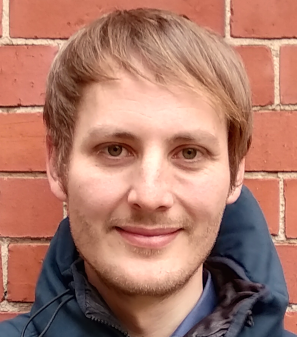
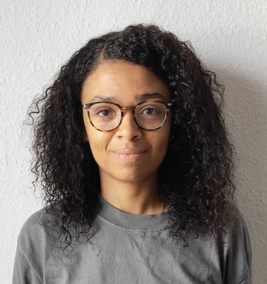
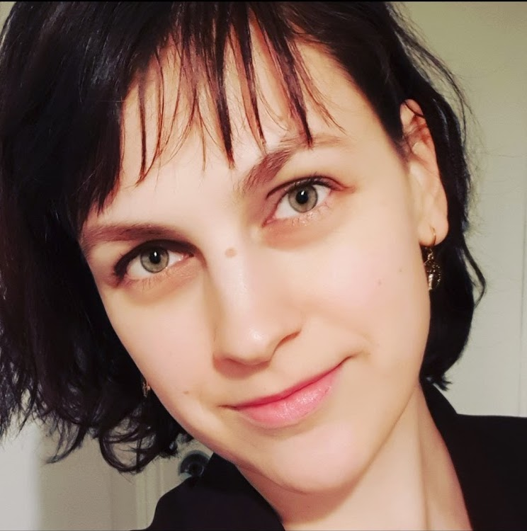
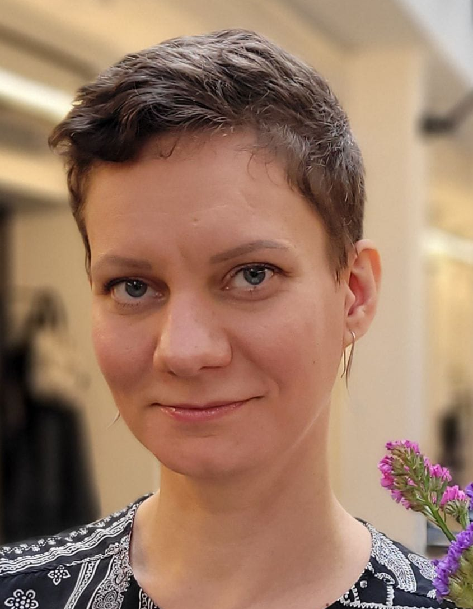

Idea
Humans are able to report their subjective certainty about decisions, actions or perceptions. We believe that such subjective certainty – or confidence – can be used as a learning signal to reinforce neural circuitry involved in these processes. We refer to this form of learning as confidence-based learning.
Our goal is to establish this potential novel form of learning using psychophysical, physiological and neuroimaging measurements. To understand the mechanisms of confidence-based learning, we devise computational models and test them through simulation and data-driven model comparison.
This group is supported by the Deutsche Forschungsgemeinschaft (DFG).
People
Matthias Guggenmos Professor for Computational Cognitive Neuroscience |
 |
Denise Kittelmann Student assistant |
 |
Barbora Wolf Student assistant |
 |
Marek Němeček Student assistant |
|
Elena Korchagina Lab rotation student |
 |
Cheyenne Cavender Intern |
 |
Henriette Settmacher Bachelor student |
|
Laura Ullmann Student assistant |
|
Lena Esther Ptasczynski MSc Computational Science Student assistant |
|
We are open to students interested in internships, lab rotations or master theses. To apply, please write us an E-mail with a short motivation and CV.
Key publications
Learning with internal feedback: confidence-based learning
Ptaczynski E, Steinecker I, Sterzer P, Guggenmos M (2022). The value of confidence: Confidence prediction errors drive value-based learning in the absence of external feedback. PLOS Computational Biology 18(10): e1010580
Guggenmos M & Sterzer P (2017). A confidence-based reinforcement learning model for perceptual learning. RLDM 2017: Paper M94 BioRxiv
Guggenmos M, Wilbertz G, Hebart MN & Sterzer P (2016). Mesolimbic confidence signals guide perceptual learning in the absence of external feedback. eLife 5: 1–19
Measuring metacognition
Guggenmos M (2022). Reverse engineering of metacognition. eLife 11: e75420
Guggenmos M (2021). Measuring metacognitive performance: type 1 performance dependence and test-retest reliability. Neuroscience of Consciousness 2021: 1
Learning with external feedback
Varrier RS, Rothkirch M, Stuke H, Guggenmos M* & Sterzer P* (2020). Unreliable feedback deteriorates information processing in primary visual cortex. NeuroImage 214, 116701
Varrier RS, Stuke H, Guggenmos M* & Sterzer P* (2019). Sustained effects of corrupted feedback on perceptual inference. Scientific Reports 9: 5537
Methods: multivariate pattern analysis in neural data analysis
Guggenmos M, Schmack K, Veer I, Lett L, Sekutowicz M, Sebold M, Garbusow M, Sommer C, Wittchen H-U, Zimmermann U, Smolka M, Walter H, Heinz A & Sterzer P (2020). A multimodal neuroimaging classifier for alcohol dependence. Scientific Reports 10, 1–12
Gayet S, Guggenmos M, Christophel TB, Haynes J, Paffen CLE, Sterzer P, and Van Der Stigchel S (2020). No evidence for mnemonic modulation of interocularly suppressed visual input. NeuroImage 215, 116801
Sekutowicz M*, Guggenmos M*, Kuitunen P-S, Garbusow M, Sebold M, Pelz P, Priller J, Wittchen H-U, Smolka MN, Zimmermann U, Heinz A, Sterzer P & Schmack K (2019). Neural Response Patterns During Pavlovian-to-Instrumental Transfer Predict Alcohol Relapse and Young Adult Drinking. Biological Psychiatry 86: 857–863
Guggenmos M, Sterzer P & Cichy RM (2018). Multivariate pattern analysis for MEG: a comparison of dissimilarity measures. NeuroImage 173: 434–447
Gayet S, Guggenmos M, Christophel TB, Haynes JD, Paffen CLE, Van Der Stigchel S, and Sterzer P (2017). Visual working memory enhances the neural response to matching visual input. Journal of Neuroscience 37, 6638–6647
Methods: computational modeling
Sebold M, Nebe S, Garbusow M, Guggenmos M, Schad DJ, Beck A, Kuitunen P-S, Sommer C, Neu P, Zimmermann US, Rapp MA, Smolka MN, Huys QJM, Schlagenhauf F & Heinz A (2017). When habits are dangerous - Alcohol expectancies and habitual decision-making predict relapse in alcohol dependence. Biological Psychiatry 82: 846-856
Ostwald D, Spitzer B, Guggenmos M, Schmidt TT, Kiebel SJ & Blankenburg F (2012). Evidence for neural encoding of Bayesian surprise in human somatosensation. NeuroImage 62: 177–88
See Google Scholar for a full list of publications.
Find us
We are located at
1) Health and Medical University Potsdam (HMU), Institute for Mind, Brain and Behavior, Olympischer Weg 1, 14471 Potsdam
2) Charité – Universitätsmedizin Berlin, Department of Psychiatry and Neurosciences, Visual Perception Lab, Campus Mitte, 10117 Berlin